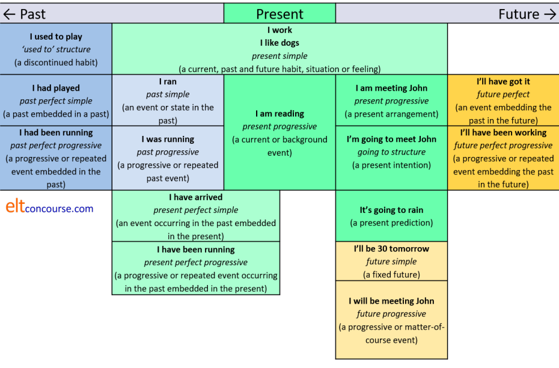

The Index of English Tenses

A map of the tense system in English
(NB: Many sources and coursebooks use 'continuous' instead of 'progressive'. On this site, the difference between the two terms is maintained but the term progressive is used here for simplicity's sake. This chart is quite basic. Reality, as is often the case, is more complicated.)
Click on an area of the chart to go to guides to each form.

The chart and the following table is available as a PDF document.
Look through the chart and try to make your own examples of each of the tense forms and then click for a quick matching test to see if you can remember the names.
What follows is not exhaustive but it covers the main uses of these
tenses in English.
The fourth column contains examples of the tenses used in the passive.
An essential guide to the passive and a more complex and detailed one
are available from the list of links at the end.
The fifth column contains examples of typical time words associated with
the tenses. It is not
the time words which determine the tense use, it is the concept of the
tense which determines appropriate time expressions.
| Tense | Main uses | Examples | Passive forms | Time adverbials |
| Present simple | Repeated or habitual events | I play tennis every Thursday | The work is done here | every
day seldom never sometimes usually rarely scarcely ever often |
| Generalisations | Flamingos eat fish | Bears are seen in these hills | ||
| Schedules | The train arrives at 8 | The class is timetabled to start at 9 | ||
| Present conditions (with some verbs only) representing continuous states | I am here He needs money She enjoys opera |
More resources are needed | ||
| Present progressive | Current events | He is writing a letter | A meeting is being held | today these days now this week tomorrow next Thursday |
| Current (background) events which may not be occurring now | He is writing a book He is studying French |
The house is being decorated | ||
| Currently arranged future | I'm seeing the doctor tomorrow | Tomorrow's meeting is being held in Room 6 | ||
| Past simple | Finished past action or condition | I ate at six I lived in Brazil I was happy |
Lunch was eaten at 6 | yesterday last week for years at two last month that summer at three then in those days up to then |
| Repeated or habitual past action | I always ate at six | All our holidays were taken there | ||
| Past progressive | Interrupted past action | I was eating when he rang | I was being told about it when she interrupted | |
| Progressive action at a particular time | I was eating at 7 | The car was being serviced then | ||
| Discontinued or temporary past habit | I was walking to work in those days | Calls were being handled by real people then | ||
| Parallel past events or events | It was raining and the wind was blowing
hard I was eating while she was watching television |
Trees were being uprooted and the roads were being flooded | ||
| Present perfect | A past embedded in the present which changes it | I have spoken to him (so now he
knows) I have learnt French (so now I can speak it) He has broken the pump (so now we can't use it) |
The pump has been broken | recently today this morning just already yet never ever |
| To describe past experiences which change the present | I have been to America (so I can speak about it) | It has been explained to me | ||
| Present perfect progressive | To emphasise the duration of a long event embedded in the present which changes it | I've been waiting for hours (and am really cold) | The road has been being repaired | for years since 1990 already all my life this month |
| Events embedded in the present which change it and are still current (this is actually continuous, not progressive) | She's been looking unwell for some time (and still is) | She has been being treated for it for weeks | ||
| A series of repeated past events embedded in the present which change it | He's been stealing money from his employer | Money has been being stolen from his employer | ||
| Past perfect | Completed events before others embedded in the past which explain it | I had already spoken to her before he asked | The tables had been laid before the guests arrived | already before beforehand yet when ... |
| Completed long events before others embedded in the past which explain it | It had rained for a week and the garden was muddy | The garden had been soaked by the rain | ||
| Past perfect progressive | (Un)completed long events before events in the past. A previous event is embedded in a past event | I had been playing chess for two hours before he arrived | The game had been being played | |
| To show a past result of a previous event. The previous event is embedded in the past event | He had been working too hard and was exhausted | The work had been being badly done so ... | ||
| To show a repeated event embedded in a past event | People had been forgetting to come so he sent a reminder | Meetings had been being forgotten so ... | ||
| Future simple or will future | A present promise or
offer The verb will represents willingness, not futurity |
I'll write soon, I'll do the washing
up There's no butter! I'll go and get some. |
That'll be done, I promise | soon at 2 o'clock in two days on Friday in 2030 soon after a while |
| Predictions based on experience or hunches | This will be difficult | The work won't please her | ||
| Certain absolute futures | I will be 45 on Monday | The clocks will be put forward | ||
| Future progressive | Potentially interrupted action | He'll be working when you come | The game will be being brought to an end when you arrive | |
| Progressive future event happening as a matter of course at a specific time | I'll be working at 7 | Your statements will be being taken | ||
| Future perfect | Completed event occurring before another and embedded within it which affects the second | He'll have finished the book by the time I want it | The book will have been written before the show | by then by Thursday by the time ... before ... beforehand |
| To show causal connections between future events | He'll have repaired the car and then we can use it | The car will have been repaired | ||
| States occurring before future events (certain verbs only) which change the second event | I'll have been at the hotel for a day or two before I can call you | The manager will have been asked the question many times | ||
| Future perfect progressive | Future progressive events embedded in later events which alter them | I will have been working for over two hours before you get here | The house will have been being decorated | |
| To show causal connections between long events and states | He'll have been travelling for ten hours and will be tired | The car will have been being driven too fast and ... | ||
| To show a repeated previous event embedded in a future event | I'll have been trying to call him for two hours by then | |||
| going to | To express current intention | I'm not going to put up with it | That is going to be done by me | tomorrow soon afterwards before 6 |
| To express prediction based on current evidence or experience | Look at those clouds. It's going to rain any minute | The party is going to be spoilt by the rain | ||
| used to | Past habits (generally only for events) | I used to drink lots of coffee I used to take my holidays in Spain |
This used to be done here | then in those days at that time |
The passive structures in brown are
disputed. Some aver that perfect progressive forms do not allow
the passive but these forms are available if rarely used.
The passive form of a scheduled event using the simple present is rare.
Of course there's another test. Try to do it without referring to the chart and table.
| Related guides (you can also click on the table of tenses above to go to guides to the tense you want) | |
| tenses index | this is an index of the guides to various tense forms and aspects on this site |
| time lines for tenses | this is a set of time lines which will help you and your learners understand the concepts which the tense forms encode |
| Understanding English Tenses | this is a guide for learners which covers most of the forms exemplified here (new tab) |
| tense vs. aspect | a guide to the essentials of the two concepts |
| voice: active and passive | an essential guide only |
| the passive | a more detailed and more complex guide |
| copular verbs | for a guide to how be and other verbs work to link the subject and complement |
| the present perfect | for a guide to how have works to form the language's most troublesome and misunderstood tense |
| stative and dynamic uses of verbs | to see what tenses are possible with certain types of verb uses |
In the in-service section of this site, you will find more complicated and detailed guides to particular ways of expressing time relationships in English.